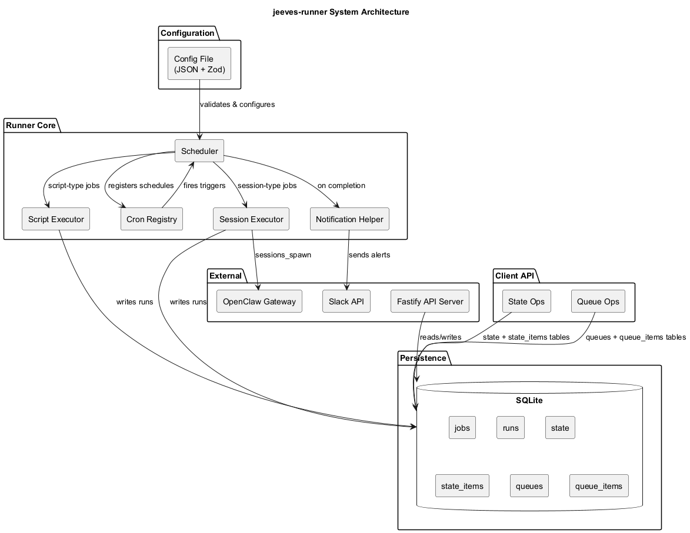
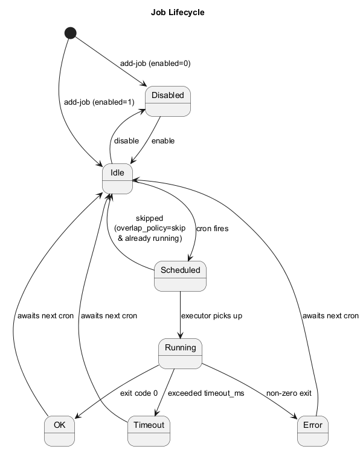
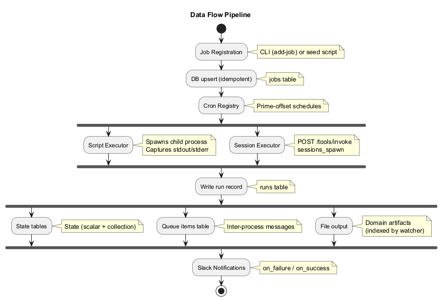

High-level architectural overview of jeeves-runner for contributors and advanced users.

The runner consists of several layered components:

Jobs transition through these states:
Each job has an overlap_policy:

Jobs are registered via the jeeves-runner add-job CLI command or programmatically via a seed script (e.g., scripts/seed-jobs.ts). Registration upserts into the SQLite jobs table — the database is the live source of truth.
/tools/invoke endpoint with sessions_spawnruns table with status, duration, exit code, stdout/stderrScripts can persist state and exchange data through the runner's client API:
state) with optional TTL, plus collection state (state_items) for tracking sets of items. Scripts use getState/setState/deleteState for scalar state and hasItem/getItem/setItem/deleteItem/countItems/pruneItems/listItemKeys for collection state.queues) with dedup config and retention, plus ordered queue items (queue_items) with claim semantics. Producers enqueue items; consumers claim and complete them. Used for inter-process data passing.jobs TableStores job configuration. Registered via CLI or seed script, mutable via API.
| Column | Type | Description |
|---|---|---|
id |
TEXT PK | Unique job identifier |
name |
TEXT | Human-readable name |
schedule |
TEXT | Cron expression |
script |
TEXT | Absolute path to executable script |
type |
TEXT | script or session |
enabled |
INTEGER | 1 = enabled, 0 = disabled |
timeout_ms |
INTEGER | Timeout in milliseconds (null = no timeout) |
overlap_policy |
TEXT | skip or allow |
on_failure |
TEXT | Slack channel for failure alerts |
on_success |
TEXT | Slack channel for success alerts |
runs TableStores execution history. Automatically pruned based on runRetentionDays.
| Column | Type | Description |
|---|---|---|
id |
INTEGER PK | Auto-increment run ID |
job_id |
TEXT FK | References jobs.id |
started_at |
TEXT | ISO 8601 timestamp |
finished_at |
TEXT | ISO 8601 timestamp |
status |
TEXT | ok, error, or timeout |
exit_code |
INTEGER | Process exit code |
stdout |
TEXT | Captured standard output |
stderr |
TEXT | Captured standard error |
duration_ms |
INTEGER | Execution duration |
state TableScalar key-value store for script operational state.
| Column | Type | Description |
|---|---|---|
namespace |
TEXT | Logical grouping (typically job ID) |
key |
TEXT | State key |
value |
TEXT | JSON-encoded value |
expires_at |
TEXT | Optional TTL timestamp |
state_items TableCollection state for tracking sets of items within a namespace.
| Column | Type | Description |
|---|---|---|
namespace |
TEXT | Logical grouping (typically job ID) |
key |
TEXT | Collection key |
item_key |
TEXT | Individual item identifier |
value |
TEXT | JSON-encoded value |
expires_at |
TEXT | Optional TTL timestamp |
queues TableQueue-level metadata including deduplication and retention configuration.
| Column | Type | Description |
|---|---|---|
id |
TEXT PK | Queue identifier |
dedup_config |
TEXT | JSON deduplication configuration |
retention |
TEXT | JSON retention policy |
queue_items TableOrdered message queue with claim semantics.
| Column | Type | Description |
|---|---|---|
id |
INTEGER PK | Auto-increment |
queue_id |
TEXT FK | References queues.id |
payload |
TEXT | JSON-encoded payload |
status |
TEXT | pending, claimed, completed, failed |
created_at |
TEXT | Enqueue timestamp |
claimed_at |
TEXT | Claim timestamp |
completed_at |
TEXT | Completion timestamp |
Session-type jobs delegate execution to the OpenClaw Gateway:
url and tokenPath from configPOST /tools/invoke with sessions_spawnRequirement: The gateway must have sessions_spawn in gateway.tools.allow (it is on the default HTTP deny list).